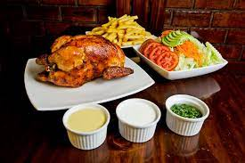

Pollo A La Brasa

Pollo A La Brasa: the Peruvian roasted chicken dish that conquered a nation
A roasted chicken dish accompanied by thick french fries, a fresh salad, and dipping sauces.
Ingredients
- 1 whole chicken
- ½ cup plain vinegar
- ½ cup ground ají panca chilli pepper
- ½ cup freshly made garlic paste
- ½ cup dark soy sauce
- 2½ cup vegetable oil
- Salt, ground black pepper, and cumin
- 6 large white cooking potatoes
- 1 small head iceberg lettuce
- 3 medium tomatoes
- ½ cucumber
- ½ cup salad dressing
- 5 tbsp Dipping sauces Mayonnaise, ketchup, mustard and ají chilli pepper dip
Aji Amarillo Sauce
- 1 large aji amarillo pepper
- 1/3 cup queso fresco
- 1/4 cup vegetable oil
- 1 large garlic clove
- 3 tbsp lime juice
- 1/2 tsp huacatay paste
- 1 pinch sugar
- pepper to taste